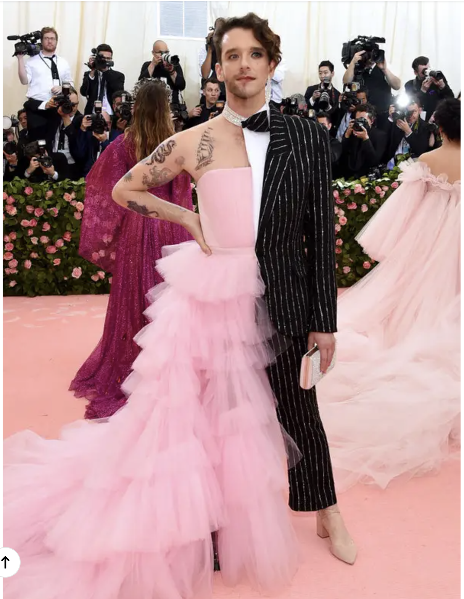
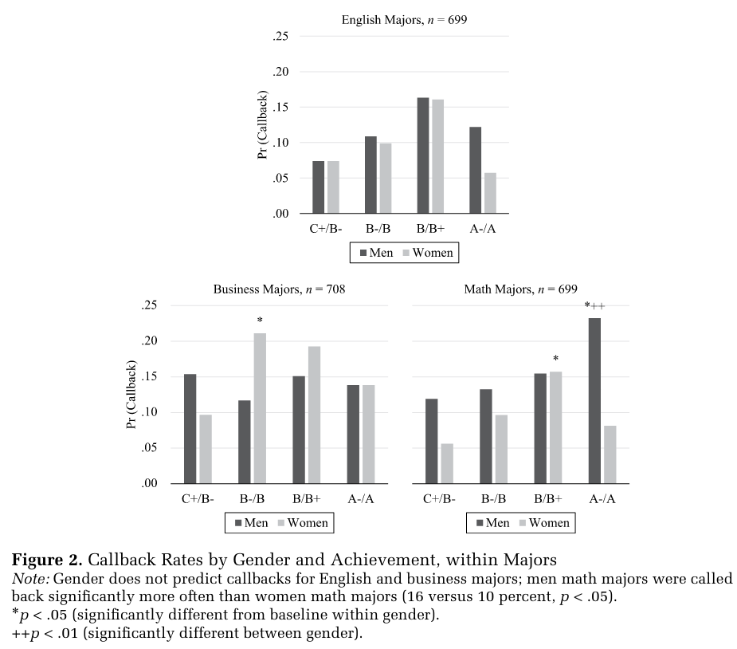
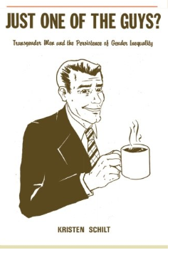
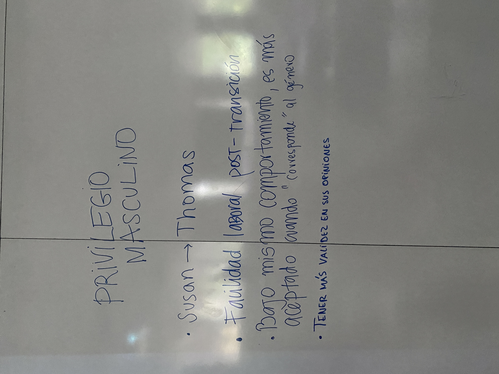
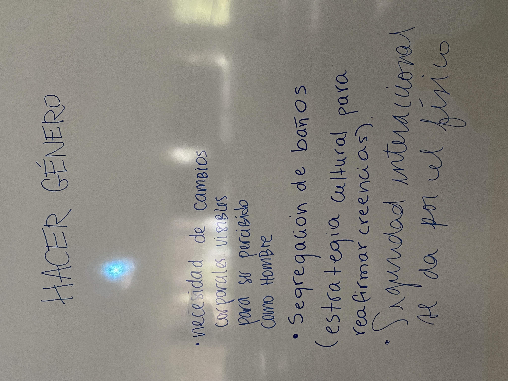
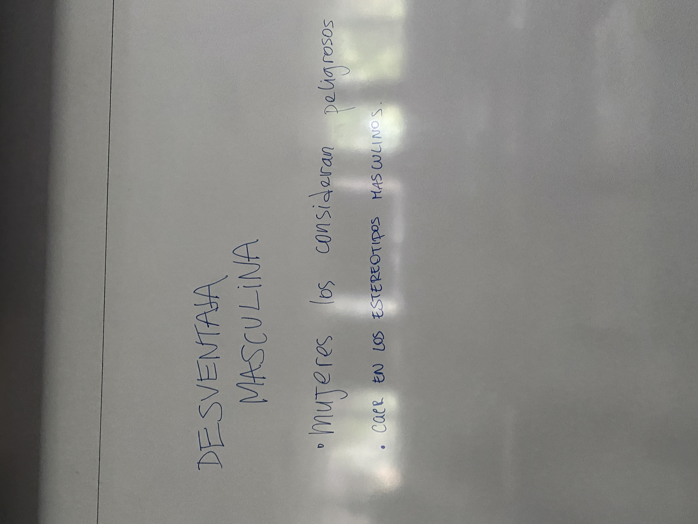
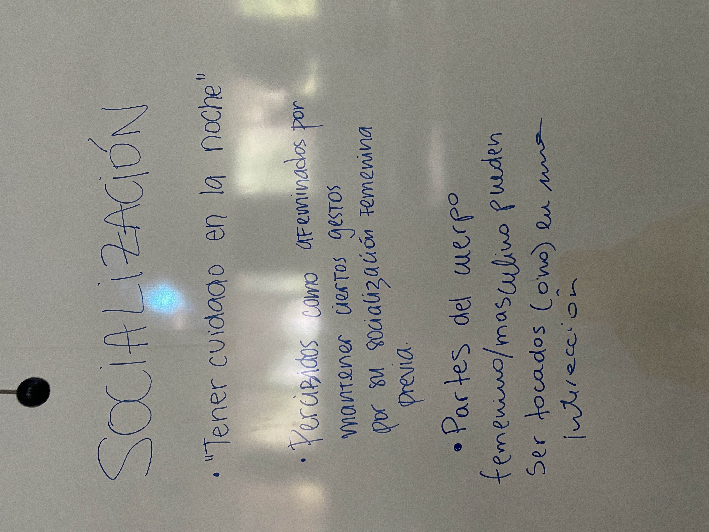
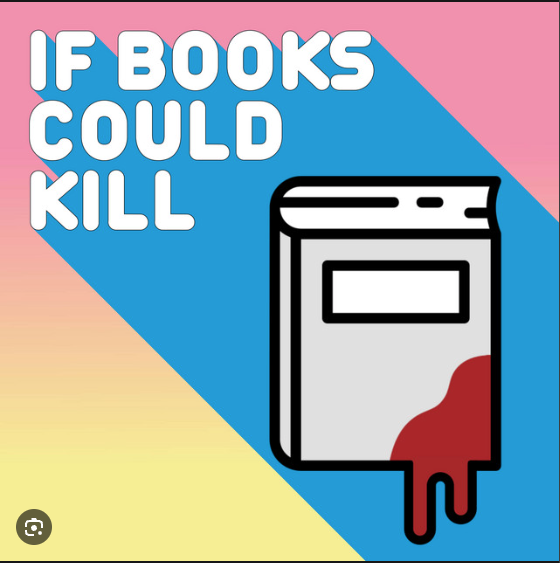

Clase 4: Interacciones
SOL191 · Instituto de Sociología · PUC
SOL191 · Clase 4: Interacciones

El género lo “hacemos” en la medida que obedecemos o rompemos reglas y expectativas de género. Estas expectativas funcionan como “reglas del juego” a las que los individuos rinden cuentas.
Es la manera en que el género como constructo social se refuerza en la interacción social.
Cuando los individuos interactúan, se encuentran expectativas diferenciadas por género sobre su comportamiento, arraigadas en creencias estereotipadas.
En la medida en que las reglas se sigan más o menos, el género se produce en interacción — con variación contextual, cultural y temporal.
“Sostenemos que el ‘hacer género’ es realizado por mujeres y hombres cuya competencia como miembros de la sociedad es rehén de su producción.”
El género es algo que uno hace, más que algo que uno es.
“Hacer género significa crear diferencias entre niños y niñas y hombres y mujeres, diferencias que no son naturales, esenciales o biológicas. Una vez que las diferencias han sido construidas, se utilizan para reforzar la ‘esencialidad’ de género.”
— West y Zimmerman
Actividad rápida (5 min): nube de palabras en vivo
¿Qué ejemplos se les ocurren de cómo “hacemos género” en la vida cotidiana?
Escriban 1-2 ejemplos anónimos desde el celular en Wooclap.
Es un desafío ser visto como no binario en un mundo de género binario, y muchas veces implica mezclar lo femenino con lo masculino.
“Quiero que las personas me miren y no piensen que soy hombre o mujer. Si están confundidos, ese es el punto.”
— Kline, en Wade & Ferree (2022)
Es una manera de rechazar el binario, pero que depende del binario.
Francine Deutsch propone un contrapunto influyente a West y Zimmerman: si todo comportamiento cuenta como “hacer género”, la teoría explica cualquier cosa y pierde poder analítico.
5 min. Dos bandos: uno defiende que el género siempre se está haciendo; el otro defiende que hay condiciones reales donde el género se “deshace” y pierde relevancia (Deutsch 2007).
Estas creencias no son solo descriptivas (cómo creemos que hombres y mujeres son), sino también:
Por ejemplo, las mujeres son penalizadas o castigadas socialmente cuando no siguen normas proscriptivas al ser líderes con agencia, ambiciosas, muy competentes (e.g., Rudman & Glick 1999; Rudman, Moss-Racusin, Phelan & Nauts 2012; Quadlin 2018).
¿Y los hombres?: https://www.youtube.com/watch?v=u0loTWc9Y14
Las mujeres con rendimiento académico muy alto son penalizadas en el mercado laboral, especialmente cuando vienen de áreas matemáticas. La evidencia sugiere que los empleadores valoran a las mujeres más por ser amistosas, mientras que a los hombres por ser competentes y comprometidos (Quadlin 2018).

Hay una categorización de sexo. Categorizamos a otras personas con respecto a su sexo de manera automática e inconsciente. Suele ser la primera categoría en que agrupamos, mostrando que el género es un principio organizador importante. En general ocurre en base a apariencias y señales de comportamiento.
El género tiende a ser difuso y operar como identidad “de fondo”. Hay otras identidades culturalmente más específicas (jefe y empleado/a) que están “al frente”. El impacto de las creencias varía según el contexto, y se combina con las otras identidades y roles relevantes (ej. sesgo en cómo llevamos a cabo el rol de jefe y empleado/a).
Las creencias sobre un mayor status de los hombres moldean implícitamente las expectativas que los participantes tienen de su propia competencia y la de los demás, y estas expectativas operan como profecías autocumplidas. Esto impacta en:
Este es el nivel interaccional de un modelo de género con tres niveles (individual, interaccional, institucional — Risman 2004): lo retomaremos como marco general en la Clase 6 (Multinivel).

Westbrook y Schilt retoman esta misma línea de investigación y muestran que las instituciones (baños, deportes, cárceles, documentos de identidad) deciden “quién cuenta” como hombre o mujer usando criterios distintos y a veces contradictorios: identidad, cuerpo o documentación legal. Cuando estos criterios entran en conflicto surge lo que llaman un “gender panic”.
Referencia: Westbrook, L., & Schilt, K. (2014). Doing Gender, Determining Gender: Transgender People, Gender Panics, and the Maintenance of the Sex/Gender/Sexuality System. Gender & Society, 28(1), 32-57. PDF abierto: https://academicweb.nd.edu/~rwilliam/ndonly/readings/SocProblems/01-GayRightsGayMarriageGayProblems/Doing%20Gender%20Determining%20Gender%202014.pdf
Grupos de 4-5 personas.
¿Qué significa “alcanzar la hombría social” (achieving social maleness)? ¿Cómo se relaciona con el cuerpo? ¿Y de qué manera es un proceso interaccional?
En la pizarra, anotar al menos 1 ejemplo de:




En parejas (3 min): para cada imagen, ¿qué norma de género se está siguiendo o rompiendo? ¿Cuál de las cuatro razones para “hacer género” (sobreaprendizaje, placer, para otros, evitar fiscalización — Wade & Ferree) explica mejor esa conducta?

Podcast recomendado (agregar título/nombre del episodio): https://open.spotify.com/episode/23ydVYiUUxGOeNaVuZaMy5
¡Bienvenidas más recomendaciones para compartir con el curso!
Wooclap
Al pensar/ajustar la pregunta de su trabajo final, revisen:
SOL191 Sociología del Género · Clase 4
Socialización en los medios
Miss Representation — tráiler extendido: https://www.youtube.com/watch?v=keVhWR9esmA (documental de 2011, sobre la representación de mujeres en medios y política en EE.UU.)
Predicción antes de revelar: